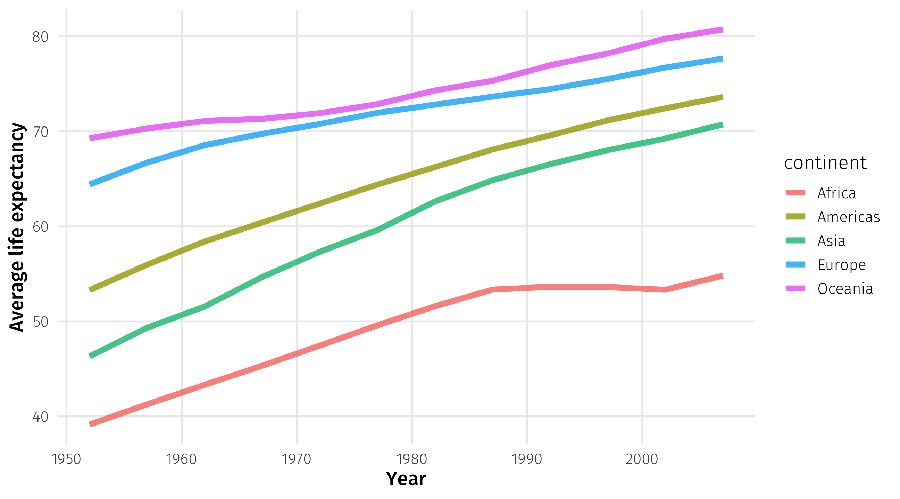

# A tibble: 11,493 × 10
country year imports exports gdp pop land_borders sea_borders
<chr> <dbl> <dbl> <dbl> <dbl> <dbl> <dbl> <dbl>
1 United States … 1946 5000 9775 2.48e12 1.38e8 2 1
2 United States … 1947 5824 15369 2.43e12 1.40e8 2 1
3 United States … 1948 7710 12470 2.49e12 1.43e8 2 1
4 United States … 1949 7160 11920 2.47e12 1.47e8 2 1
5 United States … 1950 9140 10220 2.56e12 1.49e8 2 1
6 United States … 1951 11400 14920 2.73e12 1.51e8 2 1
7 United States … 1952 11220 14950 2.82e12 1.53e8 2 1
8 United States … 1953 11460 15330 2.99e12 1.56e8 2 1
9 United States … 1954 10670 14690 3.00e12 1.59e8 2 1
10 United States … 1955 11850 15410 3.10e12 1.62e8 2 1
# ℹ 11,483 more rows
# ℹ 2 more variables: min_cap_dist <dbl>, sum_igos <dbl>Relationships I
POL51
Juan F. Tellez
University of California, Davis
September 30, 2024
Plan for today
Data, objects, variables
Mean, median, variance
Summarizing data
Data, objects, variables
Objects are one of the most confusing parts of coding for new programmers
An object is a “thing” that lives in R that we can use; think of the pantry metaphor!
In this class, 99.99% of objects are just data
Data has variables which are represented as columns
Objects ➡️ Data ➡️ Variables
Data, objects, variables
trade is a data object that contains variables like imports
Data, objects, variables
Confusing! imports_gdp is an object that contains a variable that’s also named imports_gdp
This is why we need to pick good variable names!
A common mistake
Say we wanted to multiply GDP per capita by population and plot the result:
❌
Mistake: using the original gapminder data, treating gap_gdp as a variable
Summarizing data
Summarizing data
Often, with data, we want to compare things
Are democracies more peaceful than autocracies?
Does early-voting increase turnout?
To do this, we often rely on statistical summaries of our data:
Means, medians, minimums, maximums, variances
Summary stats
The mean: 3, 4, 8 \(\rightarrow\) \(\frac{(3 + 4 + 8)}{3} = 5\)
The median: 3, 4, 8 \(\rightarrow\) 4
The minimum: 3, 4, 8 \(\rightarrow\) 3
The maximum: 3, 4, 8 \(\rightarrow\) 8
Example: an experiment
Some counties let people vote early; others don’t
Do counties with early provisions have higher turnout?
The data
| Vote early? | Turnout (%) |
|---|---|
| Yes | 54.7 |
| Yes | 56.7 |
| No | 37.3 |
| No | 44.1 |
| No | 40.6 |
| No | 38.6 |
| Yes | 46.7 |
| No | 35.4 |
| Yes | 51.8 |
| Yes | 50.1 |
Quantifying “higher”
We can compare the averages of counties that do have early voting against those that don’t:
| Vote early? | Average turnout |
|---|---|
| No | 40.1 |
| Yes | 50.2 |
Counties with early voting have, on average, 10 percentage points higher turnout
Mean vs. median
We almost always compare averages, but medians are helpful in some cases:
One more stat: variation
Another way to compare data is by how much a variable varies
Some distributions are very narrow, others are very wide
Narrow = observations are similar; wide = observations are not similar
Measuring variation: the standard deviation
The formula:
\[ s = \sqrt{\frac{1}{N-1} \sum_{i=1}^N (x_i - \overline{x})^2}\]
All the movement is here, the sum of the differences between each observation \(x_i\) and the average observation \(\overline{x}\)
\[\sum_{i=1}^N (x_i - \overline{x})^2\]
Variance intuition
| age | \(\overline{age}\) | \(\ age - \overline{age}\) | \(\ (age - \overline{age})^2 \) |
|---|---|---|---|
| 87 | 55.3 | 31.7 | 1003.6 |
| 41 | 55.3 | -14.3 | 205.1 |
| 23 | 55.3 | -32.3 | 1044.6 |
| 45 | 55.3 | -10.3 | 106.5 |
| 58 | 55.3 | 2.7 | 7.2 |
| age | \(\overline{age}\) | \(\ age - \overline{age}\) | \(\ (age - \overline{age})^2 \) |
|---|---|---|---|
| 48 | 49.9 | -1.9 | 3.8 |
| 48 | 49.9 | -1.9 | 3.8 |
| 52 | 49.9 | 2.1 | 4.2 |
| 48 | 49.9 | -1.9 | 3.8 |
| 50 | 49.9 | 0.1 | 0.0 |
\[\sum_{i=1}^N (age_i - \overline{age})^2\]
The farther observations are from the mean, the larger the standard deviation
Measuring variation
Same average (~$50,000), different standard deviations
Summarizing data in R
Summary statistics with summarize()
We can use summarize() to calculate things like the mean, median, etc.

Summarizing condenses data into statistics
Using summarize()
Say I want to know the average life expectancy in the world in 2007:
# A tibble: 142 × 6
country continent year lifeExp pop gdpPercap
<fct> <fct> <int> <dbl> <int> <dbl>
1 Afghanistan Asia 2007 43.8 31889923 975.
2 Albania Europe 2007 76.4 3600523 5937.
3 Algeria Africa 2007 72.3 33333216 6223.
4 Angola Africa 2007 42.7 12420476 4797.
5 Argentina Americas 2007 75.3 40301927 12779.
6 Australia Oceania 2007 81.2 20434176 34435.
7 Austria Europe 2007 79.8 8199783 36126.
8 Bahrain Asia 2007 75.6 708573 29796.
9 Bangladesh Asia 2007 64.1 150448339 1391.
10 Belgium Europe 2007 79.4 10392226 33693.
# ℹ 132 more rowsUsing summarize()
Using summarize()
# A tibble: 1 × 1
avg_life
<dbl>
1 67.0Notice how the data has been summarized: only one row
Notice that I’ve named the summary statistic avg_life
Using summarize()
What if I also wanted to know the median life expectancy?
Using summarize()
What if I also wanted to know the min and max life expectancy?
Using summarize()
What if I also wanted to know the standard deviation of life expectancy?
Using summarize()
summarize() is like mutate() in that you are creating new variables
So note that you have to name the new variables!
We can use summary functions in filter
which country had the lowest life expectancy in 2007?
We can use summary functions in filter
which countries had above average GPD but below average health?
# A tibble: 3 × 6
country continent year lifeExp pop gdpPercap
<fct> <fct> <int> <dbl> <int> <dbl>
1 Botswana Africa 2007 50.7 1639131 12570.
2 Equatorial Guinea Africa 2007 51.6 551201 12154.
3 Gabon Africa 2007 56.7 1454867 13206.Woe unto us: missing data
In life, sometimes data is missing
respondent doesn’t answer a question, no one knows Afghanistan’s GDP in 1943, etc.
R represents missing data as NA
| name | type1 | type2 | height_m | weight_kg |
|---|---|---|---|---|
| Lycanroc | rock | NA | NA | NA |
| Vulpix | fire | ice | NA | NA |
| Muk | poison | poison | NA | NA |
| Persian | normal | dark | NA | NA |
| Marowak | ground | fire | NA | NA |
| Graveler | rock | ground | NA | NA |
Summarizing with missing data
If you try to summarize data that has missing values, R will return NA:
Note
Any math operation with NA will return NA (.e.g, 3 + NA = NA)
What to do?
There are whole classes on what to do with missing data (impute, simulate, model, etc.)
In this class we will tell R to ignore missing observations
Remember…
If you’re trying to calculate a summary statistic and keep getting NA…
99.99999% of the time you need to add na.rm = TRUE to your function!
🚨 Your turn: 🚢 trade 🚢 🚨
Dataset from juanr on international trade:
| country | year | imports | exports | gdp | pop | land_borders | sea_borders | min_cap_dist | sum_igos |
|---|---|---|---|---|---|---|---|---|---|
| United States of America | 1946 | 5000 | 9775 | 2.479307e+12 | 138170640 | 2 | 1 | 0 | 44 |
| United States of America | 1947 | 5824 | 15369 | 2.430213e+12 | 139838676 | 2 | 1 | 0 | 47 |
| United States of America | 1948 | 7710 | 12470 | 2.494227e+12 | 143378709 | 2 | 1 | 0 | 52 |
| United States of America | 1949 | 7160 | 11920 | 2.466941e+12 | 146714635 | 2 | 1 | 0 | 57 |
| United States of America | 1950 | 9140 | 10220 | 2.562489e+12 | 149230105 | 2 | 1 | 0 | 59 |
| United States of America | 1951 | 11400 | 14920 | 2.729119e+12 | 150880698 | 2 | 1 | 0 | 60 |
🚨 Your turn: 🚢 trade 🚢 🚨
Using the trade dataset:
How has Inter-Governmental Organizations (IGOs) membership expanded over time? Calculate the median number of IGOs that countries belonged to in 1960. Repeat for 2010. About how much has IGO membership grown in 50 years?
What is having a sea border worth? Look only at countries that have at least one sea border in the year 2010. What is the average value of exports among these countries? Do the same for countries with no sea borders. About how much more do countries with sea borders export than countries without?
What was the country with the most exports in 1960? What about in 2012?
15:00
Relationships
summarize() lets us calculate statistics for the whole dataset
But what if we want to do this for different groups within the data?
This is at the heart of making comparisons
Variation in trade over time: the brutal way
How much do country imports vary for each country over time?
Tedious: filter() to calculate standard deviation of imports for each country
Variation in trade over time: the brutal way
I could go on to another country:
Variation in trade over time: the brutal way
And so on for all countries… but this is brutally tedious
Using group_by()
We can use group_by() in combination with summarize() to calculate some stat by another variable in the data:
# A tibble: 202 × 2
country var_trade
<chr> <dbl>
1 Afghanistan 2485.
2 Albania 1754.
3 Algeria 14819.
4 Andorra NA
5 Angola 7584.
6 Antigua & Barbuda NA
7 Argentina 19530.
8 Armenia 1575.
9 Australia 72784.
10 Austria 58474.
# ℹ 192 more rowsUsing group_by()
Like with anything else, we can store our results as a new object:
var_time = trade %>%
group_by(country) %>%
summarise(var_trade = sd(imports, na.rm = TRUE))
var_time# A tibble: 202 × 2
country var_trade
<chr> <dbl>
1 Afghanistan 2485.
2 Albania 1754.
3 Algeria 14819.
4 Andorra NA
5 Angola 7584.
6 Antigua & Barbuda NA
7 Argentina 19530.
8 Armenia 1575.
9 Australia 72784.
10 Austria 58474.
# ℹ 192 more rowsVariation in trade over time
And use our object to make plots:
Using group_by()
We can even group_by() multiple variables 🤯
Average life expectancy per time:
Using group_by()
We can even group_by() multiple variables 🤯
Average life expectancy per year and continent:
# A tibble: 60 × 3
# Groups: year [12]
year continent avg_life
<int> <fct> <dbl>
1 1952 Africa 39.1
2 1952 Americas 53.3
3 1952 Asia 46.3
4 1952 Europe 64.4
5 1952 Oceania 69.3
6 1957 Africa 41.3
7 1957 Americas 56.0
8 1957 Asia 49.3
9 1957 Europe 66.7
10 1957 Oceania 70.3
# ℹ 50 more rowsUsing group_by()
Store as object:
Make the plot
🚨 Your turn: 🌡️ ugly prejudice 🌡️ 🚨
Researchers use feeling thermometers to measure how people feel about different groups
🌡 goes from zero (strong dislike) to 100 (strong like), with 50 as the neutral point
| birth_year | sex | race | party_id | educ | ft_black | ft_white | ft_hisp | ft_asian | ft_muslim | ft_jew | ft_christ | ft_fem | ft_immig | ft_gays | ft_unions | ft_police | ft_altright | ft_evang | ft_dem | ft_rep |
|---|---|---|---|---|---|---|---|---|---|---|---|---|---|---|---|---|---|---|---|---|
| 1931 | Female | White | Democrat | 4-year | 51 | 50 | 79 | 50 | 50 | 50 | 50 | 99 | 95 | 50 | 80 | 76 | 1 | 50 | 88 | 21 |
| 1952 | Female | White | Republican | 2-year | 98 | 90 | 95 | 100 | 61 | 100 | 98 | 65 | 96 | 82 | 62 | 95 | 50 | 96 | 86 | 96 |
| 1931 | Male | White | Independent | High school graduate | 87 | 90 | 91 | 88 | 49 | 25 | 50 | 74 | 77 | 77 | 100 | 78 | 0 | 2 | 91 | 20 |
| 1952 | Male | White | Republican | 4-year | 90 | 85 | 90 | 96 | 80 | 91 | 94 | 25 | 91 | 71 | 20 | 94 | 50 | 70 | 22 | 83 |
| 1939 | Female | White | Democrat | 2-year | 100 | 50 | 100 | 100 | 100 | 100 | 28 | 100 | 100 | 100 | 100 | 28 | NA | NA | 99 | NA |
| 1959 | Female | Black | Democrat | Post-grad | 98 | 70 | 99 | 100 | 100 | 100 | 100 | 73 | 100 | 54 | 80 | 24 | 4 | 53 | 53 | 4 |
🚨 Your turn: 🌡️ ugly prejudice 🌡️ 🚨
Using the therm dataset:
Calculate average 🌡 towards two groups of your choosing, broken down by one respondent characteristic. Make sense of the finding.
Calculate average 🌡 towards two groups of your choosing, broken down by two (🤯🤯🤯) respondent characteristics. Make sense of the finding.
15:00